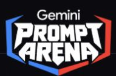

Gemini Prompt Arena için hazırlandı.Emre Küçükgöçer’in bireysel başvuru çalışması
Üretim defterini incele ↗İlk bakışta,
sence hangisi?
Aynı dişteki iki açık alan. Hangisini daha yakından incelemek isterdin?
Bakmak kolay.
Ayırt etmek?
Bir alanı seç. Ardından kaynak görseldeki işareti açıp bu farkın neden önemli olduğunu inceleyelim.
Bir ışığın
peşinde.
Aynı yüzeyde iki değişim.
Biri ışıkla yer değiştiriyor, diğeri
yüzeyde kalıyor.
Neyi denedim?
Hareket eden bir ışık yansımasını, yüzeyde kalan küçük bir renk farkından ayıran tek planlık bir görsel anlatı kurdum. İstemde kamera hareketini, malzemeyi ve işaretin yüzeye bağlı kalmasını tarif ettim.
Sonucu nasıl okudum?
İlk çıktı sakin kamera hareketini ve ışık geçişini üretti. Kontur ise yer yer çift çizgiye dönüştü ve beyaz alanın sınırını tam izleyemedi. Sonraki istemde bu sorunu özellikle ele aldım.
Kaynak istemi ve üretim notlarını aç
Bu video Gemini’nin video oluşturma aracıyla üretildi. Kavramsal bir görselleştirmedir. Klinik görüntü analizi veya gerçek segmentasyon çıktısı içermez. Özgün video dosyası ve platformun kaynak işaretleri korunur.
İstemi ve üretim kaydını indir ↗Bir görüntünün
içine bak.
Önce fotoğraf. Sonra sınırlar. En sonunda, o işaretlerin ne
anlattığı.
Bu görüntünün analizini adım adım izle.
Gönderilen örnek görselin animasyonla yeniden anlatımı. Maskeler temsilî olarak çizildi. Kaynaktaki 0,91 ve 0,96 skorları yeniden ölçülmedi. Klinik tanı için hekim değerlendirmesi gerekir.
İki bölge.
İki ayrı gözlem.
Görüntüde bir bölgeye dokun.
Maskesini ve açıklamasını birlikte
incele.
Renk farkının
izini sür.
- Görüntüdeki gözlem
- İlk dişin yüzeyinde çevresine göre daha açık görünen bir alan var.
- Model çıktısında
- Kaynak görsel bu alanı “White Spot” olarak etiketliyor ve 0,91 skorunu gösteriyor.
- Açıklamaya dönüşürken
- Ön rapor, görülen renk farkını anlatır. Farkın nedenini belirlemek için klinik değerlendirme gerekir.
01 / Çekim
Her şey
bir kareyle
başlıyor.
Telefonun kamerasını hazırladığını düşün. Yönlendirmeli çekim, ağız içindeki aynı bölgeyi doğru açı ve yeterli ışıkla görüntülemene yardımcı olur.
Bu deneyimde sentetik bir örnek kullanılıyor.

Bir işaret çizmek
işin başlangıcı.
Benim için asıl mesele, o işareti gören kişinin ne anlayacağıydı.
Diş hekimi korkusu, zaman ayıramamak ya da masraf kaygısı kontrolleri erteletebiliyor. DentAI fikri, ağız sağlığına evde daha dikkatli bakmayı ve gerektiğinde bir hekime ulaşmayı kolaylaştırma isteğinden doğdu.
Fotoğrafın kalitesi, yanlış alarmlar ve açıklamanın dili bu yüzden birlikte ele alındı. Aşağıda bu kararları kendin inceleyebilirsin.
Bazen doğru adım,
yeniden çekmek.
Çekim koşulunu değiştir.
Akışın neden devam ettiğini ya da
durduğunu gör.
Bu örnekte çekim koşulu arayüzde canlandırılır. Kalite ölçümü veya model çıkarımı yapılmaz.
Analizden önce,
görüntüye bak.
Tekrar çekim istemek de tasarlanması gereken bir kullanıcı deneyimi.
Peki, perde arkasında
ne oluyor?
Bir ayrıntıyı değiştir.
O kararın akıştaki yerini gör.
CLAHE ile yerel kontrastı düzenledim. Buradaki sürgü bu adımın görsel mantığını anlatıyor. Gerçek işlem, OpenCV görüntü hazırlama hattında yapılıyor.
Parlayan her şey
bir bulgu mu?
Işık da beyaz görünür.
Tükürük yüzeyindeki parlama, açık renkli bir mine bölgesine benzeyebilir. Bu tür örnekleri eğitimde negatif örnek olarak kullanmak, modelin ayrımı öğrenmesine yardımcı olur.
Hard negative mining · Yanlış pozitifleri azaltmaya yönelik eğitim yaklaşımı
Bir cümle ekle.
Anlatım değişsin.
Aynı gözlemle başla.
Açıklamanın sınırlarını ve dilini sen seç.
Gemini web’in Pro modunda, aynı istekte sekiz yönerge varyantı üretildi. Denemede temsili bir metin gözlemi kullanıldı; görüntü yüklenmedi. Seçimlerin aşağıdaki kaydedilmiş yanıtı değiştirir. Kaynak istemi ve ham çıktıları indir ↗
İşaretlenen açık alan hakkında bir açıklama yaz.
Oluşan yönergeyi oku
Ek yönergeler kapalı / Varyant 0Başlangıç kaydı yükleniyor…
Seçtiğin yönerge varyantının kaydı
Yanıtı gördüm.
İstemi değiştirdim.
Aynı temsili gözlem.
Üç ayrı yeni sohbet, üç gerçek yanıt.
Gemini web’in Pro modunda yapılan metin denemeleri. Görüntü yüklenmedi. Her istem bir kez çalıştırıldı. Aşağıdaki yanıtlar kayıttan, değiştirilmeden gösterilir.
Deneme kaydı yükleniyor…
Bu yanıtı üreten istem
Yanıtı okumak.
Her parçanın
bir görevi var.
Birbirine bağladığım bileşenler
ve ürün için düşündüğüm devamı.
Hazırlama ve kontrast
Bölge ve piksel maskesi
Görüntü ve bağlam
Birlikte çalışan demo
Hackathon prototipiGeliştirilen çalışma
Python görüntü işleme hattını, segmentasyon modelini ve Gemini açıklama katmanını Streamlit demosunda birleştirdim. Arayüzü CSS ile düzenledim ve sunum sırasında Colab ortamındaki demoya erişim için Localtunnel kullandım.
- Python
- OpenCV
- NumPy
- CLAHE
- PyTorch
- Ultralytics
- YOLOv8-Nano
- Instance Segmentation
- Hard Negative Mining
- Binary Cross-Entropy
- Gemini 2.0 Flash
- google-generativeai
- Multimodal AI
- Prompt Engineering
- Streamlit
- HTML / CSS
- Colab
- Localtunnel
- Node.js / npx
Mobil ve cihaz üzerinde işlemeÜrün geliştirme yönü
Tespit modelini mobil cihazda çalıştırmak için TensorFlow Lite ve FP16/INT8 nicemleme yaklaşımını ele aldım. Flutter ve Dart ile yönlendirmeli çekim ve reaktif arayüz, Firebase ve Firestore ile izinli hasta–hekim paylaşımı ürün planında yer alıyor. Çekim tutarlılığı için isteğe bağlı 3B makro lens aparatı da değerlendirildi.
Cihazdaki tespit ve uzaktaki Gemini açıklaması farklı veri akışlarıdır. Bulut açıklaması kullanıldığında hangi verinin iletildiği kullanıcıya açıklanmalı ve uygun izin alınmalıdır.
- TensorFlow Lite
- FP16 / INT8
- Quantization
- Edge AI
- NPU / GPU
- Flutter
- Dart
- State-driven UI
- Firebase
- Firestore
- NoSQL
- 3B makro lens
Kullanıcıdan kliniğePlanlanan B2B2C model
Temel taramanın ücretsiz sunulmasını, ileri analiz için aboneliği ve kişinin isteğiyle uygun bir diş kliniğine yönlendirilmesini planladım. Klinik tarafında, kullanıcının paylaştığı ön raporu okuyabilecek bir panel düşünülüyor. Premium abonelik, yönlendirme komisyonu ve klinik SaaS üyeliği planlanan gelir kalemleri.
Klinik doğrulama, cihazlar arasında performans ölçümü ve farklı çekim koşullarında güvenilirlik, ürünleşme sürecindeki değerlendirme başlıklarıdır. Tanı ve tedavi kararını hekim verir.
Bunu ben
geliştirdim.
Emre Küçükgöçer
Sivas Cumhuriyet Üniversitesi
Bilgisayar Mühendisliği öğrencisi
Türk-Alman Üniversitesi
Hackathon 2026
DentAI’ı bireysel olarak geliştirdim. Görüntü hazırlama, modelin bölgeyi işaretlemesi, Gemini’nin açıklaması ve demo arayüzü üzerinde çalıştım. En çok üzerinde durduğum konu, bu parçaların kullanıcı için anlaşılır bir sırayla birlikte çalışmasıydı.
Bu deneyimi Gemini Prompt Arena için hazırlarken, sonuca giderken aldığım kararları da görünür kılmak istedim. Buradaki her adım, projedeki bir soruya karşılık geliyor.